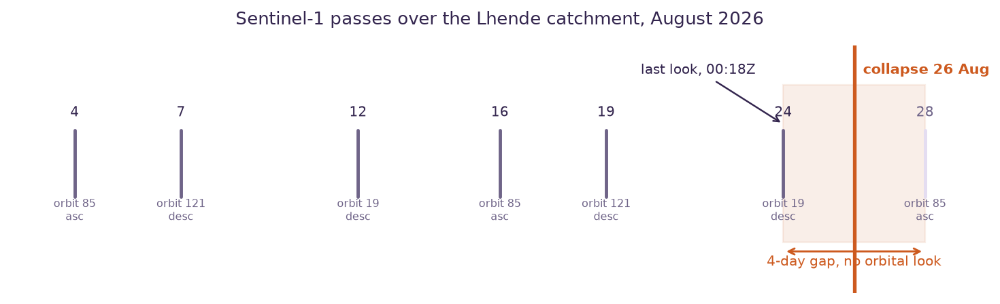
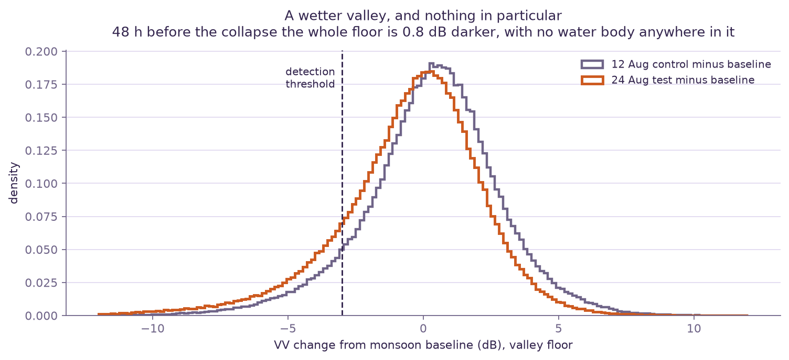
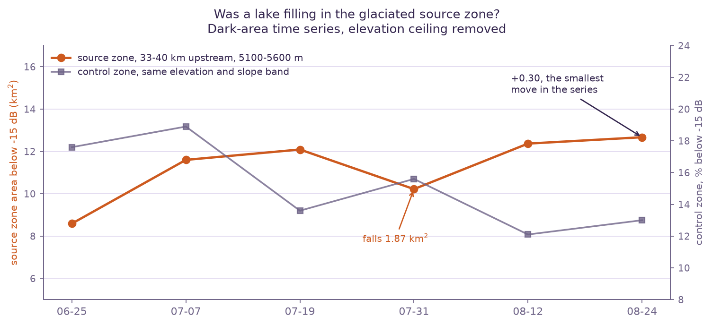

Was the Nepal barrier lake visible from orbit before it burst?
On 26 August 2026 a rock and ice avalanche came off the Tibetan side of the border and dropped into the Lhende Khola. It dammed the river, a lake ponded behind the debris, and the dam failed. The surge ran about 60 km down the Bhote Koshi through Timure and Syabrubesi. We went looking for that lake in the last satellite image taken before it broke.
The collapse registered 5.2 on local seismometers, which was widely reported at first as an earthquake trigger. It was not an earthquake: the signal is the avalanche itself, as Dave Petley set out the same day. Six Nepal Electricity Authority hydropower and transmission facilities were damaged, among them Rasuwagadhi 111 MW, Sanjen Khola 78 MW and Upper Trishuli 3A. Casualty figures were still moving as we wrote this and we are not going to pin a number to them.
This is the question we can answer. A barrier lake is the one part of this cascade that sits still long enough to be photographed. If it was there on the last pass, free radar saw it and nobody looked. If it was not, the warning case is for a different instrument entirely. Either answer is worth having, so we ran it.
One look, 48 hours out
Three Sentinel-1 tracks cover this catchment, and they interleave to give a look every three to five days rather than the twelve you get from any single track. In the fortnight before the collapse that produced passes on 4, 7, 12, 16, 19 and 24 August. Then a gap.

Method
Radiometrically terrain corrected backscatter from the Microsoft Planetary Computer, the same free archive and the same pipeline architecture as our Hong Kong landslide study, with the polarisation and the terrain logic inverted. Smooth open water reflects the radar away from the sensor and goes dark, so water is a far stronger signal than a landslide scar and it shows up best in VV co-polarisation rather than VH.
The baseline is a median of four monsoon-season scenes off the same track, from 25 June to 31 July. Same season, same wetness, same snow line. That matters for a reason beyond fairness: radar shadow in a Himalayan gorge is dark too, but it is static, so it sits in the baseline and subtracts itself out. A detection has to be dark in absolute terms (at or below −15 dB) and at least 3 dB darker than the baseline, on ground flatter than 8 degrees, in a cluster of at least 2000 m2. We also ran 12 August as a control. A method that finds new lakes two weeks before the event is finding noise.
Nothing was there
Zero new-water clusters on 24 August. The 12 August control produced one, of 2000 m2, which is to say the control came out dirtier than the test.
Before treating that as a result we had to rule out the boring explanation, that the detector cannot see into a gorge at all. It can. The reach where the blockage was reported, 15 to 25 km upstream of the Miteri Bridge, gives 21,489 valley-floor pixels that are valid on every single date, with a median baseline return of −8.8 dB. That is ordinary ground. A shadowed reach would sit down at the noise floor. The valley bottom there runs at 3 to 8 degrees, which is inside the mask, not outside it.
| Mask | Water threshold | Drop | Control, 12 Aug | Test, 24 Aug | Excess |
|---|---|---|---|---|---|
| slope ≤ 8° | −15 dB | −3 dB | 3,688 px | 3,740 px | +52 |
| slope ≤ 15° | −15 dB | −3 dB | 6,872 px | 7,025 px | +153 |
| slope ≤ 25° | −15 dB | −3 dB | 13,285 px | 13,321 px | +36 |
| no mask | −15 dB | −3 dB | 76,775 px | 74,869 px | −1,906 |
We swept every sensible combination of the three thresholds, twenty-four in total. The excess never separates from the speckle floor, and with the terrain mask removed it goes negative. The dB change distribution bottoms out around −5 dB at the first percentile, the same speckle floor we hit in Hong Kong. A lake capable of driving a surge that wrecked 60 km of valley would cover something like 104 to 105 m2, hundreds to thousands of pixels, far above that floor.

The glacier hypothesis, and a threshold we had wrong
Our first version of this analysis capped detections at 5000 m, on the reasoning that impoundments pond on valley floors and that above the snow line wet snow mimics open water in C-band. Then reporting appeared placing an active water area 35 to 38 km upstream and citing the 24 August scene as the key comparison, and ICIMOD had attributed the 2025 flood in this same corridor to a supraglacial lake draining off the Purepu Glacier. A supraglacial lake sits on the ice at exactly the elevation our ceiling was throwing away. The threshold was excluding the leading hypothesis by construction.
So we took the ceiling off and ran a time series over that zone, 33 to 40 km upstream at 5100 to 5600 m, across all six passes. This is the test that separates the two explanations. Wet snow tracks the weather and wanders up and down. A lake fills monotonically.

One more correction, because it is the kind of mistake worth publishing. Our first read of these scenes reported that the largest cluster in the source zone had doubled between 12 and 24 August, from 411,000 to 919,000 m2. That was an artifact of the clustering step, separate patches merging across the threshold into one label. Total area, which is the number that actually means something, went from 12.37 to 12.67 km2. Two percent. Counting blobs instead of measuring area produced a headline that was not in the data.
What this does not settle: a supraglacial lake that drains englacially can empty without much change in surface area, and on a glacier at 10 m C-band the separation between water and wet snow is genuinely ambiguous. Our claim is narrow. There was no change consistent with rapid filling in the fortnight before the event, and the 24 August scene looks like 19 July and like 12 August.
What radar is for here
The honest answer to "could you have predicted this" is no, and we would rather say so on our own website than be asked in a meeting. The parts of this problem that free and tasked radar do handle:
- Mapping through cloud. This happened mid-monsoon, so optical satellites were blind for days. Radar was not. Copernicus EMS activated as EMSR927 on the day, and their rapid mapping is good and free. We are not going to duplicate it.
- Secondary impoundments. Sixty kilometres of valley now holds fresh debris, the monsoon is still running, and tributaries get dammed by new deposit fans. That hazard persists for weeks and it is exactly what the pipeline on this page detects. It is the part still worth watching.
- Attribution. The earthquake confusion in the first 24 hours is the ordinary case for independent verification. A seismic trace and a pair of radar scenes settle what actually moved.
- Slow deformation on owned assets. Tailings dams, reservoir slopes and cut faces creep measurably for weeks before they fail, and InSAR reads that at millimetre precision. Engineered structures with stable scatterers on them are a different physical problem from a rock and ice face at 5000 m, and it is the problem where the measurement holds up.
Why we publish negative results
Because the alternative is selling things that do not work. We ran this the day after the event, expecting either a quiet confirmation or a striking image of a lake nobody had noticed. We got neither, and we found two errors in our own first pass on the way: an elevation threshold that ruled out the leading hypothesis before testing it, and a doubling that turned out to be an artifact of counting instead of measuring. Both are in this note because a method you can check is worth more than a result you cannot.
Method notes: Copernicus Sentinel-1 RTC via Microsoft Planetary Computer, Copernicus DEM GLO-30, no login required for either. Descending orbit 19, Sentinel-1D, VV gamma0 at 10 m. Baseline 25 Jun, 7 Jul, 19 Jul, 31 Jul; control 12 Aug; test 24 Aug. Detection AOI 85.30 to 85.70 E, 28.20 to 28.60 N. Wind roughening raises the backscatter of open water and can hide a small lake, and in a confined gorge an early-stage impoundment may be only 20 to 50 m wide, which is two to five pixels, below what we would claim to see. Piping failure of a debris dam gives no surface warning at all. Detecting water is not assessing stability: seeing a lake would tell you an impoundment exists, never when it will go. The pipeline is about 400 lines of Python and we will send it to anyone who wants to check the numbers.